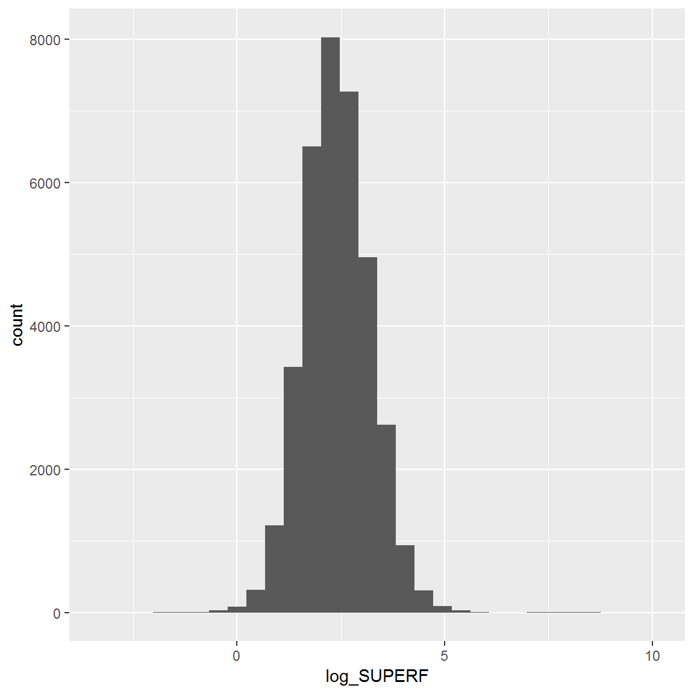
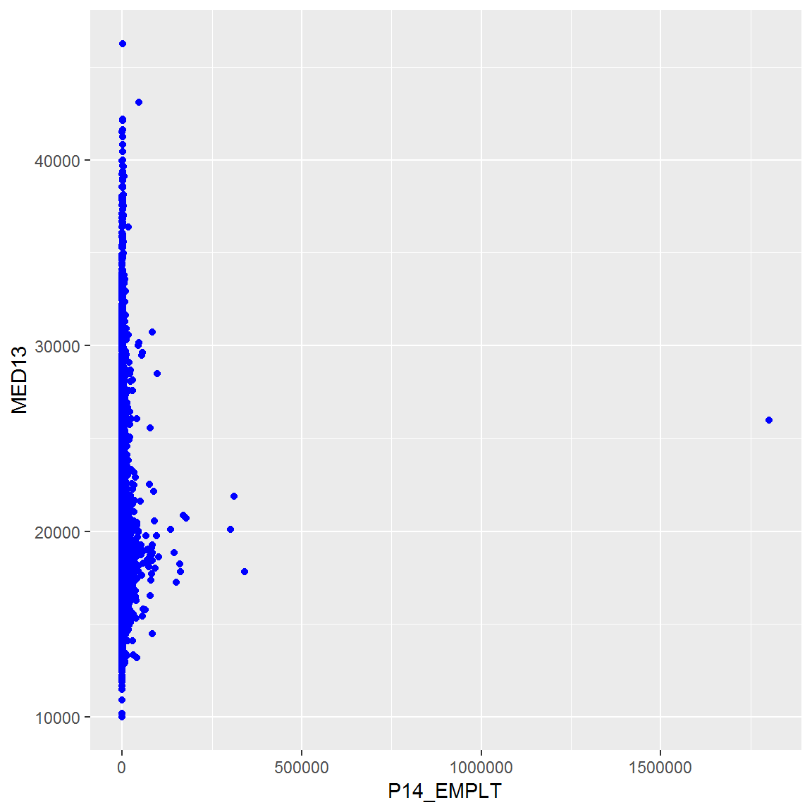
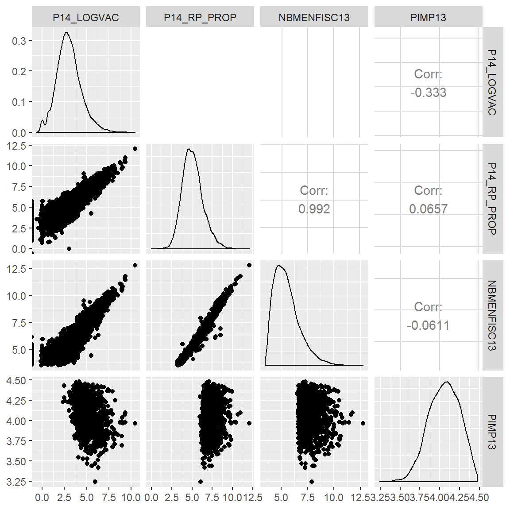
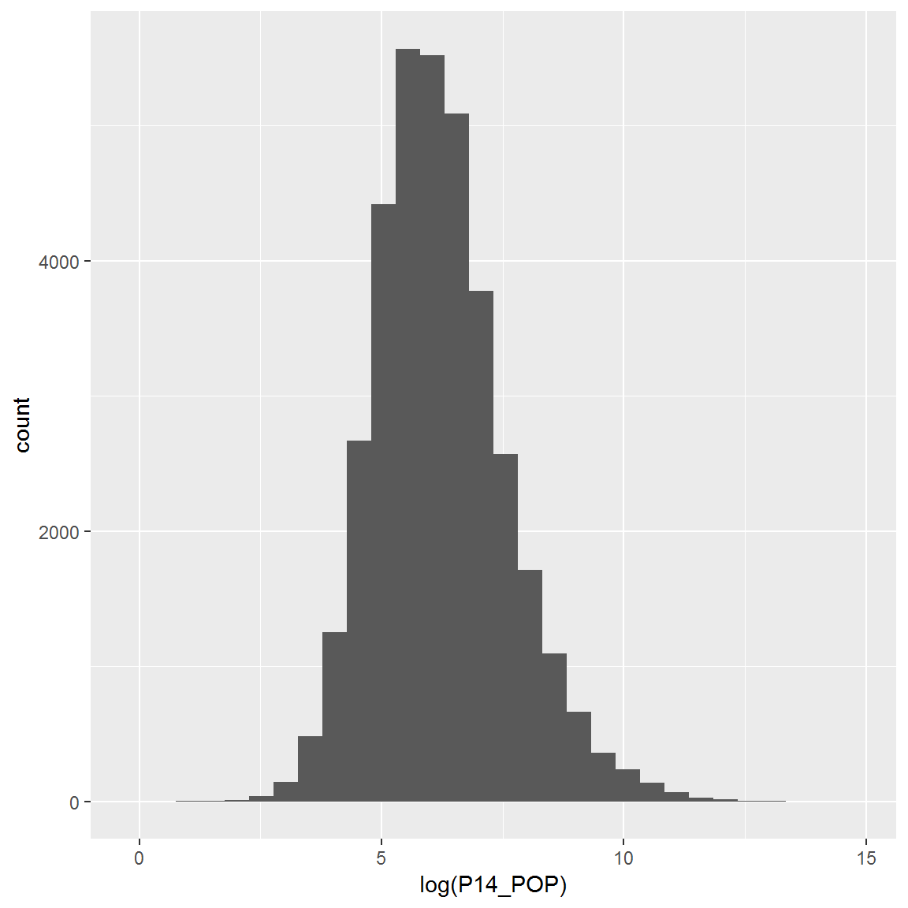

Chapitre 8 Premiers graphiques
8.1 Package ggplot2
Pour réaliser des graphiques, nous choisissons de nous servir du package ggplot2, qui permet de faire de meilleures réalisations que les fonctions basiques. Il est intégré dans le méta-package tidyverse donc il n’est pas utile de le re-charger dans notre session. Mais si vous devez le faire, le code est le suivant :
install.packages("ggplot2")
library("ggplot2")La fonction ggplot() fonctionne d’une manière particulière. La structure ressemble à ceci :
ggplot(TableEnEntree, aes(VariablesATracer)) + geom_FonctionAChoisir()Pour découvrir les nombreuses possibilités de ggplot2, vous pouvez vous référer au Module 5 : « Datavisualisation : produire des graphiques, des cartes et des tableaux » ou consulter les sites suivants :
La fonction aes() (pour “aesthetics”), utilisée dans l’instrution ggplot() permet de définir les données à tracer. On y indique les dimensions que l’on veut représenter sur le graphique. On peut représenter jusqu’à 5 dimensions sur un même graphique, mais attention à la lisibilité !
- 2 variables quanti : x en fonction de y \(\rightarrow\) 2 dimensions (nuage de points)
- taille du point \(\rightarrow\) 3e dimension (quanti)
- couleur des points \(\rightarrow\) 4e dimension (quali)
- juxtaposer des graphiques en fonction d’une variable quali \(\rightarrow\) 5e dimension !
8.2 Histogramme
Si on désire un histogramme de log_SUPERF, on fera appel à la fonction geom_histogram(). Ce graphique ne présente qu’une seule dimension (la variable quanti dont on veut visualiser la distribution)
rm(list = ls())
base <- read.csv(file = "data/Base_synth_territoires.csv",
header = T, sep=";", dec=",") %>%
select(1:24) %>%
mutate(log_SUPERF = log (SUPERF),
REG = as.factor (REG),
densite = P14_POP / SUPERF,
tx_natal = 1000 * NAISD15 / P14_POP,
tx_mort = DECESD15 / P14_POP)
ggplot(base, aes(x = log_SUPERF)) + geom_histogram()
8.3 Nuages de points
Selon les graphiques que l’on veut tracer, on peut renseigner plusieurs variables. Dans le cas d’un nuage de points, par exemple, on croise 2 variables quantitatives :
ggplot(base, aes(x = P14_EMPLT, y = MED13)) + geom_point(colour = "blue")
ggplot(base, aes(x = log (P14_EMPLT), y = log(MED13))) + geom_point(colour = "blue")
8.4 Matrice de nuages
Pour explorer son jeu de données, on peut décider de réaliser un nuage de points pour plusieurs croisements de variables possibles. Ici, en conservant quelques variables quantitatives, on peut réaliser un ensemble de graphiques. Cette “matrice” de nuage fonctionne avec le package GGally.
# install.packages("GGally")
library("GGally")
num <- select(base, P14_LOGVAC:PIMP13) %>% sample_n(10000) %>% log()
ggpairs(num) ## fonction ggpairs() de GGally
8.5 Bonus : faire un graphique “dynamique”
Une fois qu’on a généré un graphique avec ggplot, on peut le passer dans la fonction ggplotly() (package plotly) qui permet de le rendre dynamique.
library(plotly)
g <- ggplot(data = base, aes(x = REG, fill = REG)) +
geom_bar()
ggplotly(g)8.6 Exercices : créer des graphiques
A l’aide de l’aide mémoire ggplot2 :
- Réaliser un histogramme de la population communale
- Transformer les données avec la fonction log pour y voir plus clair
- Faire un barplot du nombre de communes par type ZAU
- Utiliser le paramètre fill de la fonction
aes()pour améliorer le graphique - Réaliser un graphique (nuage de points) croisant la densité de population et le taux de mortalité
- Ajouter une dimension supplémentaire avec la couleur des points (paramètre color de
aes())
ggplot(data = base, aes(x = P14_POP)) +
geom_histogram()
Ce n’est pas très informatif, mais on peut faire une transformation log pour y voir plus clair !
ggplot(data = base, aes(x = log(P14_POP))) +
geom_histogram()
Faites maintenant un barplot (qui n’est pas un histogramme !!!! ) du nombre de communes par type ZAU
ggplot(data = base, aes(x = REG)) +
geom_bar()
On va essayer d’y voir plus clair avec le paramètre fill
ggplot(data = base, aes(x = REG, fill = REG)) +
geom_bar()
ggplot(data = base, aes(x = log(P14_POP), y = log(P14_LOGVAC))) +
geom_point()
ggplot(data = base, aes(x = densite, y = tx_mort, color = REG)) +
geom_point()
Là encore il faudrait faire une transformation logarithmique, mais tout ça est abordé dans le module 3 !
Note : avec les fonctions de base, on peut obtenir de nombreux graphiques avec très peu de code, mais moins jolis :
plot(iris)
Des possibilités infinies à approfondir dans les modules 3 et 5 !!